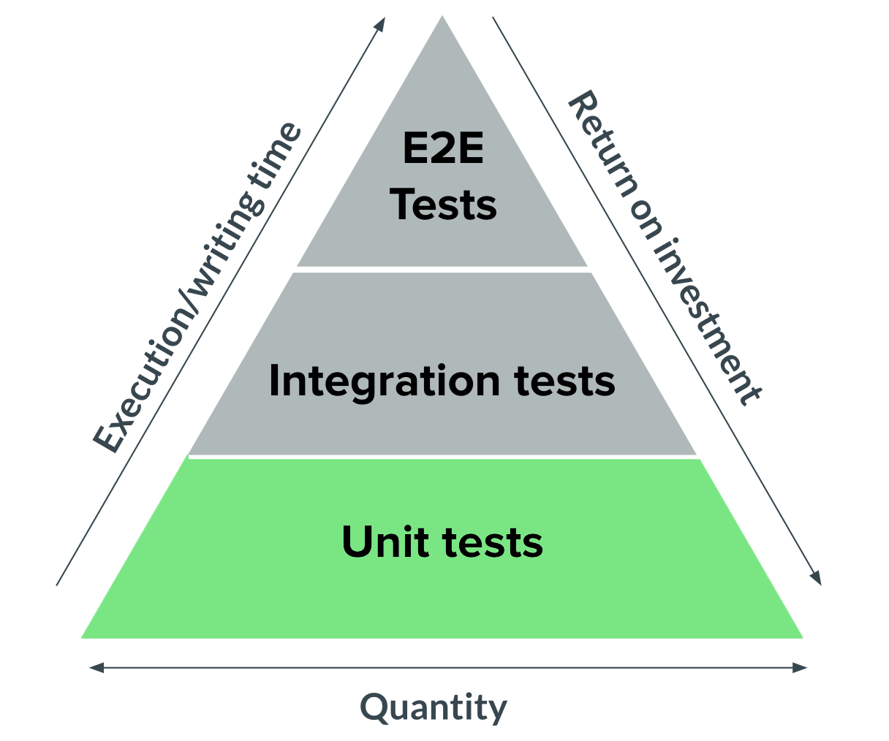
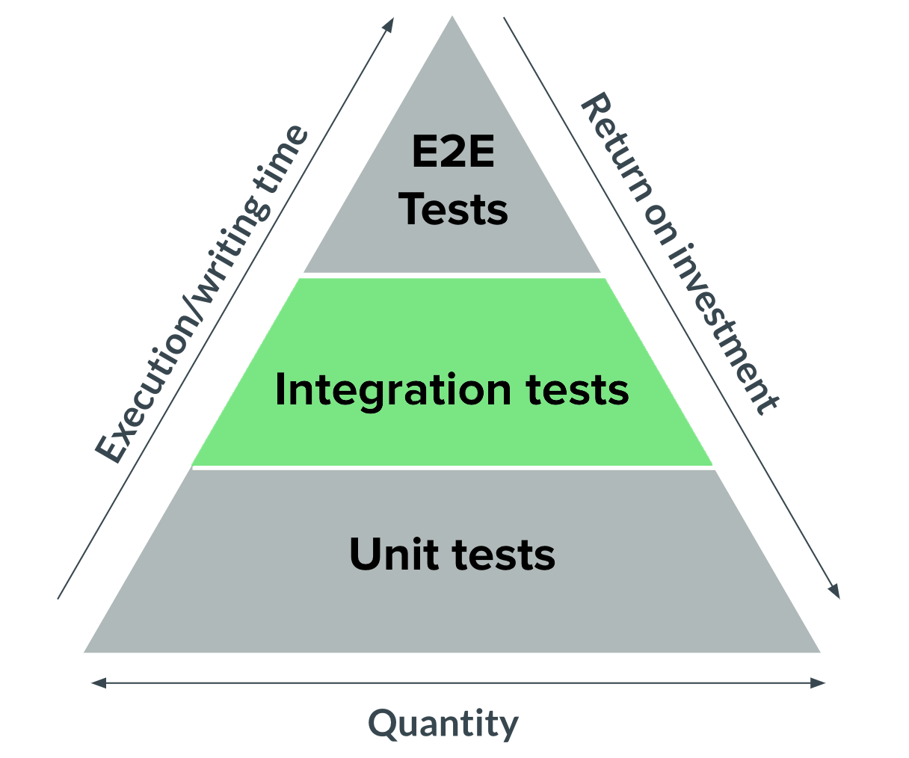
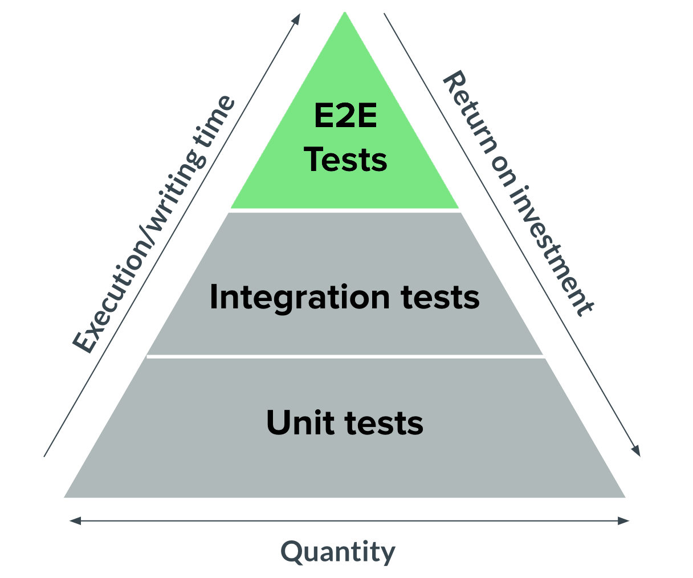
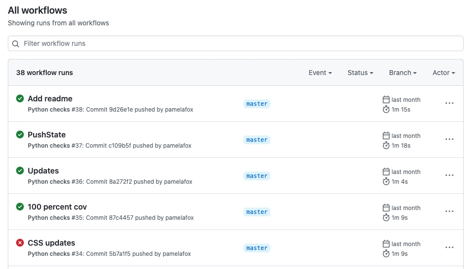

Testing Web Apps
in Python
- Press O or Escape for overview mode.
- Visit this link for a nice printable version
- Press the copy icon on the upper right of code blocks to copy the code
Welcome!
Classroom "rules":
- I am here for you!
- Every question is important
- Help each other
Introductions
Tell us about yourself:
- Name
- Pronouns
- Location
- Programming experience
- What interests you about testing?
- What's a yummy under-appreciated fruit? 🍍
Today's topics

- Testing overview
- Unittest framework
- Pytest framework
- Coverage
- Advanced Pytest features
- Integration tests for web apps
- End-to-end tests with Playwright
- Testing workflow
Testing overview
Test types
- unit tests: checks small units (e.g. functions)
- integration tests: checks across parts of the program
- end-to-end tests: checks user flows through program
- manual testing: same, but not automated 😢
Testing pyramid

Testing philosophies
- Test-First Development (TFD): Write tests first, then write the code.
- Test-Driven Development (TDD): A much stricter version of TFD which involves the "red-green-refactor".
For most people, the philosophy is that "tests are good", since they give you more confidence in the correctness of your code. Their main drawback is the time required to write and run them.
unittest
Example function for testing
Inside a summer.py file:
def sum_scores(scores):
""" Calculates total score based on list of scores.
"""
total = 0
for score in scores:
total += score
return total
unittest
The unittest module can be used to write large quantities of tests in files outside of the tested code.
import unittest
from summer import sum_scores
class TestSumScores(unittest.TestCase):
def test_sum_empty(self):
self.assertEqual(sum_scores([]), 0)
def test_sum_numbers(self):
self.assertEqual(sum_scores([8, 9, 7]), 24)
Tests are methods inside a class that use a bunch of special assert* methods.
Running unittest tests
Run a single file:
python3 -m unittest test_sum_scores.py
Run all discoverable tests:
python3 -m unittest
For more options, read the docs.
pytest
pytest
The pytest package is a popular third-party alternative for writing tests.
from summer import sum_scores
def test_sum_empty():
assert sum_scores([]) == 0
def test_sum_numbers():
assert sum_scores([8, 9, 7]) == 24
Tests are simple functions that use Python's assert statement.
Running pytest tests
Install the package:
pip3 install pytest
Run a single file:
python3 -m pytest sum_scores_test.py
Run all discoverable tests:
python3 -m pytest
Configuring pytest
Pytest can be configured in pyproject.toml:
[tool.pytest.ini_options]
addopts = "-ra"
pythonpath = ['.']
Exercise #1: Test functions
Starting from this repo:
github.com/pamelafox/testing-workshop-starter
- Follow the README instructions to open the project.
- Inside
tests/texter_test.py, add tests for thesrc/texter.pyfunctions. - Run the tests using pytest and make sure they pass.
Coverage
Test coverage
Test coverage measures the percentage of code that is covered by the tests in a test suite.
Two ways of measuring coverage:
- Line coverage: Whether a line of code was executed
- Branch coverage: Whether a possible code path was followed (i.e. in
ifconditions)
coverage.py
coverage.py is the most popular tool for measuring coverage in Python programs.
Example coverage report for a Python web app:
tests/test_routes.py ................. [ 89%]
tests/test_translations.py .. [100%]
---------- coverage: platform linux, python 3.9.13-final-0 -----------
Name Stmts Miss Cover Missing
----------------------------------------------------------
src/__init__.py 17 0 100%
src/database.py 4 0 100%
src/models.py 20 0 100%
src/routes.py 74 0 100%
src/translations.py 14 0 100%
tests/conftest.py 35 0 100%
tests/test_routes.py 110 0 100%
tests/test_translations.py 16 0 100%
----------------------------------------------------------
TOTAL 290 0 100%
Running coverage.py
Install the package:
pip3 install coverage
Run with unittest:
coverage run -m unittest test_sum_scores.py
Run with pytest:
coverage run -m pytest sum_scores_test.py
You can also run with branch coverage.
View coverage report
For a command-line report:
coverage report
For an HTML report:
coverage html
Other reporter types are also available.
Using coverage with pytest
The pytest-cov plugin makes it even easier to run coverage with pytest.
Install the package:
pip3 install pytest-cov
Run with pytest:
pytest --cov=myproj tests/
See pytest-cov docs for more options.
Exercise: Test coverage
Returning to the previous repo:
- In
pyproject.toml, add the following toaddopts:
--cov src --cov-report term-missing - Run pytest and check the coverage report.
- Add the conditionals.py file
to the
src/directory. - Add tests for the functions in
conditionals.py. - Keep adding tests until you get to 100% coverage.
Advanced pytest
Mocks & monkeypatches
If code uses functionality that's hard to replicate in test environments, you can monkeypatch that functionality.
Consider this function:
def input_number(message):
user_input = int(input(message))
return user_input
We can monkeypatch input() to mock it:
def fake_input(msg):
return '5'
def test_input_int(monkeypatch):
monkeypatch.setattr('builtins.input', fake_input)
assert input_number('Enter num') == 5
Pytest fixtures
Pytest fixtures are functions that run before each test. Fixtures are helpful for repeated functionality.
Example fixture:
import pytest
@pytest.fixture
def mock_input(monkeypatch):
def fake_input(msg):
return '5'
monkeypatch.setattr('builtins.input', fake_input)
def test_input_number(mock_input):
assert input_number('Enter num') == 5
Learn more pytest

- Pytest docs
- Book: Python Testing with pytest, by Brian Okken
- Test-Driven Development with Python, by Harry Percival
- Course: Getting started with pytest, by Brian Okken
- Test & Code podcast, by Brian Okken
Testing web apps
Test clients
Most web app frameworks provide some sort of testing client object.
- Flask:
app.test_client() - FastAPI:
fastapi.testclient.TestClient(app) - Django:
django.test.Client()
Example Flask tests:
from flaskapp import app
def test_homepage():
response = app.test_client().get("/")
assert response.status_code == 200
assert b"I am a human" in response.data
FastAPI: Example app
import random
import fastapi
from .data import names
app = fastapi.FastAPI()
@app.get("/generate_name")
async def generate_name(starts_with: str = None):
name_choices = ["Hassan", "Maria", "Sofia", "Yusuf", "Aisha", "Fatima", "Ahmed"]
if starts_with:
name_choices = [name for name in names if name.lower().startswith(
starts_with.lower())]
random_name = random.choice(name_choices)
return {"name": random_name}
FastAPI: Example tests
For access to the TestClient, install the httpx module:
pip install httpx
Write tests for each API route:
from fastapi.testclient import TestClient
from .main import app
client = TestClient(app)
def test_generate_name_params():
random.seed(1)
response = client.get("/generate_name?starts_with=n")
assert response.status_code == 200
assert response.json()["name"] == "Nancy"
Exercise: FastAPI tests
Using this repo:
github.com/pamelafox/simple-fastapi-container/
- Open repo in Codespaces or locally.
- Run
python3 -m pytestto run current tests. - Add a new route to generate random pet names.
- Add tests for the new route.
- Run
python3 -m pytestto run all tests, ensure 100% coverage.
E2E testing
End-to-end (E2E) testing
E2E tests are the most realistic tests, since they test the entire program from the user's perspective.
For a web app, an E2E test actually opens up the web app in a browser, interacts with the webpage, and checks the results.
Most popular E2E libraries:
- selenium: Can be used for a wide variety of browsers
- playwright: More limited browser-wise, but faster/less flaky 😊
Writing a Playwright test
Install playwright, pytest plugin, and browsers:
pip3 install playwright
pip3 install pytest-playwright
playwright install --with-deps
Write a test:
import pytest
from playwright.sync_api import Page, expect
def test_home(page: Page, live_server):
page.goto("http://localhost:8000")
expect(page).to_have_title("ReleCloud - Expand your horizons")
Setting up a live server
from multiprocessing import Process
import pytest
import uvicorn
from fastapi_app import seed_data
from fastapi_app.app import app
def run_server():
uvicorn.run(app)
@pytest.fixture(scope="session")
def live_server():
seed_data.load_from_json()
proc = Process(target=run_server, daemon=True)
proc.start()
yield
proc.kill()
seed_data.drop_all()
Exercise: Playwright tests
Starting from this repo:
github.com/Azure-Samples/azure-fastapi-postgres-flexible-appservice
- Open repo in Codespaces or locally.
- Follow the README instructions to run the tests.
- Add a new test that checks the footer contains 2023.
- Re-run the tests and confirm the new test passes.
Testing workflow
When to test?
- While developing new changes
- pre-commit: Before committing code to a repository.
- Before merging code into the main branch.
- Before deploying code to production.
pre-commit
pre-commit is a third-party package for running pre-commit hooks.
Running all tests before a commit can take a long time, however!
Continuous integration (CI)
Whenever code is pushed to a repo, a CI server can run a suite of actions which can result in success or failure.
Popular CI options: Jenkins, TravisCI, GitHub actions
GitHub actions
An example GitHub actions workflow with pytest:
name: Python checks
on: [push, pull_request]
jobs:
build:
runs-on: ubuntu-latest
steps:
- uses: actions/checkout@v3
- name: Set up Python 3
uses: actions/setup-python@v3
with:
python-version: 3.11
- name: Install dependencies
run: |
python -m pip install --upgrade pip
pip install pytest
- name: Run unit tests
run: |
pytest
See it in action.
Any questions?